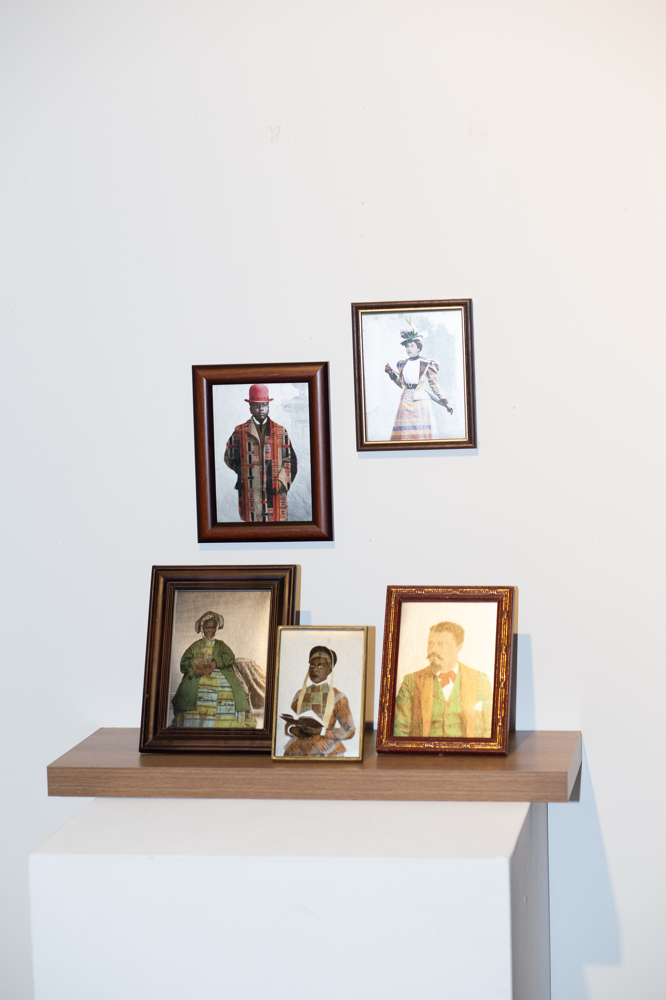

Afro Royalty (2022)
Jade Jones
Digital Photograph on Photo Rag Metallic
Afro Royalty explores the use of black bodies to remove them from the European gaze and create new narratives and use ties for these nameless individuals. Using archival images of African Americans from the early 1900’s and application of colour and West African textiles, culture that was once lost is reapplied, allowing room for self expression to be imagined from a time where there was limited ability to do so.
These portraits provide a sense of connection to once stolen roots whilst providing an admirable art presence for black individuals that fails to exist in the current art world.

'Afro Royalty', 2022 (Detail), Image Courtesy the Artist